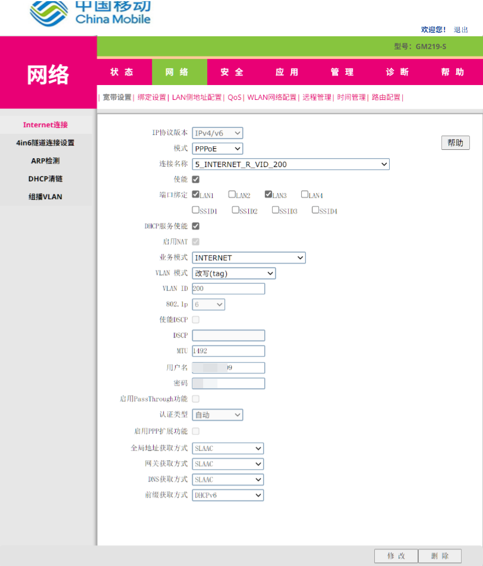
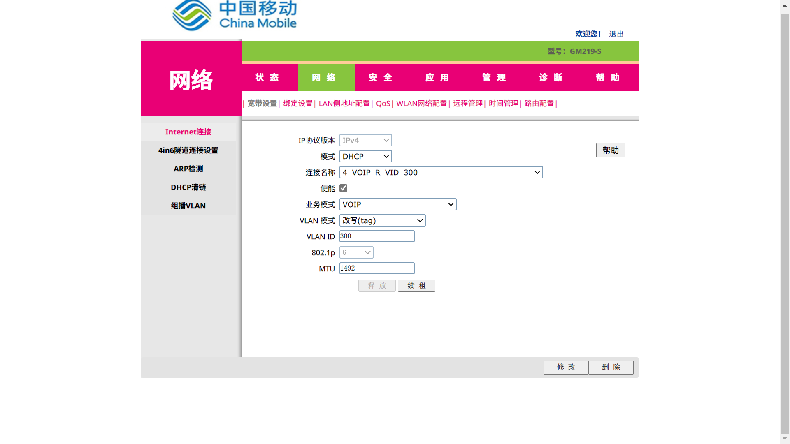
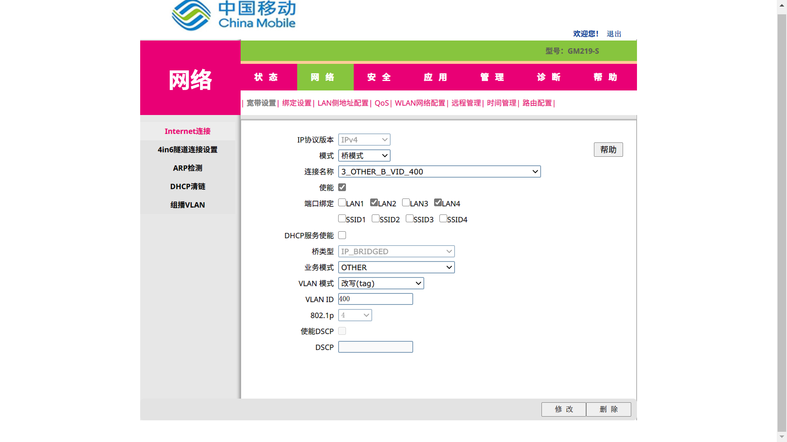
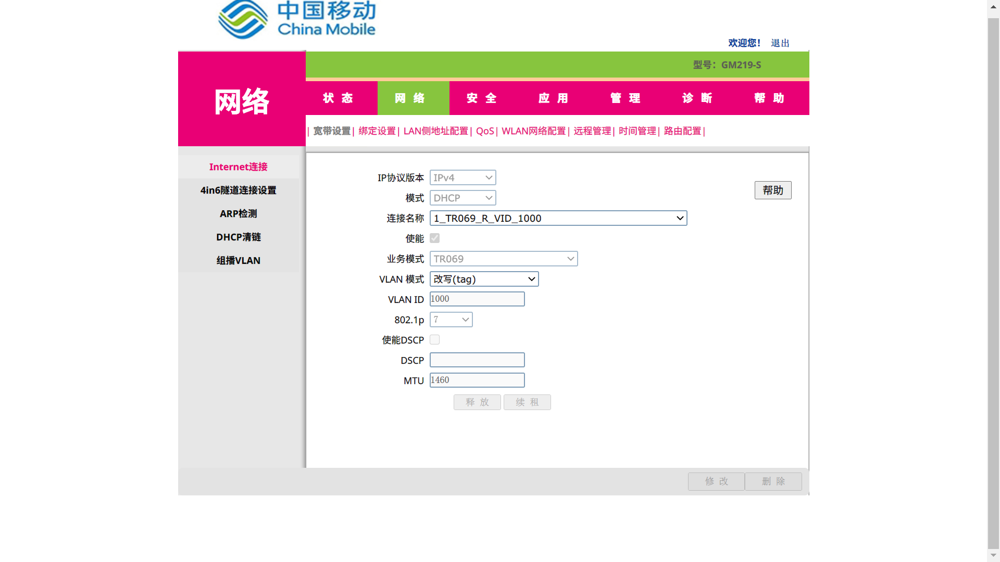

<!DOCTYPE html>


  <html class="light page-post">


<head><meta name="generator" content="Hexo 3.9.0">
  <meta charset="utf-8">
  
  <title>移动光猫GM219-S | LittleGhost&#39;s Blog</title>

  <meta name="viewport" content="width=device-width, initial-scale=1, maximum-scale=1">

  
    <meta name="keywords" content="移动,光猫,">
  

  <meta name="description" content="没用移动之前听家人说100M网速，还想着挺快的，用了之后才知道什么叫真正的“墙内墙”… 光猫型号GM219-S 用户名密码超级账户CMCCAdminaDm8H%MdA  不同光猫可能超级账户的密码不同，具体可百度以后多试几个。 普通用户user[自行查看光猫底部]  超级账户配置前提：最好准备两个浏览器（如一个chrome和一个edge），因为要登录两个账户分别进行配置的更改和使用，一个浏览器不太">
<meta name="keywords" content="移动,光猫">
<meta property="og:type" content="article">
<meta property="og:title" content="移动光猫GM219-S">
<meta property="og:url" content="https://littleghost2016.github.io/2020/03/31/移动光猫GM219-S/index.html">
<meta property="og:site_name" content="LittleGhost&#39;s Blog">
<meta property="og:description" content="没用移动之前听家人说100M网速，还想着挺快的，用了之后才知道什么叫真正的“墙内墙”… 光猫型号GM219-S 用户名密码超级账户CMCCAdminaDm8H%MdA  不同光猫可能超级账户的密码不同，具体可百度以后多试几个。 普通用户user[自行查看光猫底部]  超级账户配置前提：最好准备两个浏览器（如一个chrome和一个edge），因为要登录两个账户分别进行配置的更改和使用，一个浏览器不太">
<meta property="og:locale" content="zh-Hans">
<meta property="og:image" content="https://littleghost2016.github.io/2020/03/31/移动光猫GM219-S/%E6%A1%A5%E6%A8%A1%E5%BC%8F.png">
<meta property="og:image" content="https://littleghost2016.github.io/2020/03/31/移动光猫GM219-S/PPPoE.png">
<meta property="og:image" content="https://littleghost2016.github.io/2020/03/31/移动光猫GM219-S/VOIP.png">
<meta property="og:image" content="https://littleghost2016.github.io/2020/03/31/移动光猫GM219-S/OTHER.png">
<meta property="og:image" content="https://littleghost2016.github.io/2020/03/31/移动光猫GM219-S/TR069.png">
<meta property="og:updated_time" content="2020-03-31T11:56:57.836Z">
<meta name="twitter:card" content="summary">
<meta name="twitter:title" content="移动光猫GM219-S">
<meta name="twitter:description" content="没用移动之前听家人说100M网速，还想着挺快的，用了之后才知道什么叫真正的“墙内墙”… 光猫型号GM219-S 用户名密码超级账户CMCCAdminaDm8H%MdA  不同光猫可能超级账户的密码不同，具体可百度以后多试几个。 普通用户user[自行查看光猫底部]  超级账户配置前提：最好准备两个浏览器（如一个chrome和一个edge），因为要登录两个账户分别进行配置的更改和使用，一个浏览器不太">
<meta name="twitter:image" content="https://littleghost2016.github.io/2020/03/31/移动光猫GM219-S/%E6%A1%A5%E6%A8%A1%E5%BC%8F.png">

  

  
    <link rel="icon" href="https://avatars2.githubusercontent.com/u/22980536?s=460&v=4">
  

  <link href="/css/styles.css?v=c114cbeddx" rel="stylesheet">


  
    <link rel="stylesheet" href="/css/personal-style.css">
  

  

  

  


  
    <script async src="https://busuanzi.ibruce.info/busuanzi/2.3/busuanzi.pure.mini.js"></script>
    <link rel="stylesheet" href="//cdn.bootcss.com/font-awesome/4.3.0/css/font-awesome.min.css">
  

</head>
</html>
<body>


  
    <span id="toolbox-mobile" class="toolbox-mobile">盒子</span>
  

  <div class="post-header CENTER">
   
  <div class="toolbox">
    <a class="toolbox-entry" href="/">
      <span class="toolbox-entry-text">盒子</span>
      <i class="icon-angle-down"></i>
      <i class="icon-home"></i>
    </a>
    <ul class="list-toolbox">
      
        <li class="item-toolbox">
          <a
            class="CIRCLE"
            href="/archives/"
            rel="noopener noreferrer"
            target="_self"
            >
            文章
          </a>
        </li>
      
        <li class="item-toolbox">
          <a
            class="CIRCLE"
            href="/category/"
            rel="noopener noreferrer"
            target="_self"
            >
            分类
          </a>
        </li>
      
        <li class="item-toolbox">
          <a
            class="CIRCLE"
            href="/tag/"
            rel="noopener noreferrer"
            target="_self"
            >
            标签
          </a>
        </li>
      
        <li class="item-toolbox">
          <a
            class="CIRCLE"
            href="/link/"
            rel="noopener noreferrer"
            target="_self"
            >
            友链
          </a>
        </li>
      
        <li class="item-toolbox">
          <a
            class="CIRCLE"
            href="/about/"
            rel="noopener noreferrer"
            target="_self"
            >
            关于我
          </a>
        </li>
      
        <li class="item-toolbox">
          <a
            class="CIRCLE"
            href="/search/"
            rel="noopener noreferrer"
            target="_self"
            >
            搜索
          </a>
        </li>
      
    </ul>
  </div>


</div>


  <div id="toc" class="toc-article">
    <strong class="toc-title">文章目录</strong>
    <ol class="toc"><li class="toc-item toc-level-1"><a class="toc-link" href="#光猫型号"><span class="toc-text">光猫型号</span></a></li><li class="toc-item toc-level-1"><a class="toc-link" href="#用户名密码"><span class="toc-text">用户名密码</span></a><ol class="toc-child"><li class="toc-item toc-level-2"><a class="toc-link" href="#超级账户"><span class="toc-text">超级账户</span></a></li><li class="toc-item toc-level-2"><a class="toc-link" href="#普通用户"><span class="toc-text">普通用户</span></a></li></ol></li><li class="toc-item toc-level-1"><a class="toc-link" href="#超级账户配置"><span class="toc-text">超级账户配置</span></a><ol class="toc-child"><li class="toc-item toc-level-2"><a class="toc-link" href="#桥模式"><span class="toc-text">桥模式</span></a><ol class="toc-child"><li class="toc-item toc-level-3"><a class="toc-link" href="#IP协议版本"><span class="toc-text">IP协议版本</span></a></li><li class="toc-item toc-level-3"><a class="toc-link" href="#使能"><span class="toc-text">使能</span></a></li><li class="toc-item toc-level-3"><a class="toc-link" href="#端口绑定"><span class="toc-text">端口绑定</span></a></li><li class="toc-item toc-level-3"><a class="toc-link" href="#DHCP服务使能"><span class="toc-text">DHCP服务使能</span></a></li><li class="toc-item toc-level-3"><a class="toc-link" href="#桥模式-1"><span class="toc-text">桥模式</span></a></li><li class="toc-item toc-level-3"><a class="toc-link" href="#业务类型"><span class="toc-text">业务类型</span></a></li><li class="toc-item toc-level-3"><a class="toc-link" href="#VLAN模式"><span class="toc-text">VLAN模式</span></a></li><li class="toc-item toc-level-3"><a class="toc-link" href="#VLAN-ID"><span class="toc-text">VLAN ID</span></a></li><li class="toc-item toc-level-3"><a class="toc-link" href="#802-1p"><span class="toc-text">802.1p</span></a></li><li class="toc-item toc-level-3"><a class="toc-link" href="#使能DSCP"><span class="toc-text">使能DSCP</span></a></li><li class="toc-item toc-level-3"><a class="toc-link" href="#DSCP"><span class="toc-text">DSCP</span></a></li><li class="toc-item toc-level-3"><a class="toc-link" href="#自用配置截图"><span class="toc-text">自用配置截图</span></a></li></ol></li><li class="toc-item toc-level-2"><a class="toc-link" href="#PPPoE"><span class="toc-text">PPPoE</span></a><ol class="toc-child"><li class="toc-item toc-level-3"><a class="toc-link" href="#MTU"><span class="toc-text">MTU</span></a></li><li class="toc-item toc-level-3"><a class="toc-link" href="#用户名"><span class="toc-text">用户名</span></a></li><li class="toc-item toc-level-3"><a class="toc-link" href="#密码"><span class="toc-text">密码</span></a></li><li class="toc-item toc-level-3"><a class="toc-link" href="#全局地址获取方式、网关获取方式、DNS获取方式"><span class="toc-text">全局地址获取方式、网关获取方式、DNS获取方式</span></a></li><li class="toc-item toc-level-3"><a class="toc-link" href="#前缀获取方式"><span class="toc-text">前缀获取方式</span></a></li><li class="toc-item toc-level-3"><a class="toc-link" href="#以后可能用到的配置截图"><span class="toc-text">以后可能用到的配置截图</span></a></li></ol></li><li class="toc-item toc-level-2"><a class="toc-link" href="#VOIP"><span class="toc-text">VOIP</span></a><ol class="toc-child"><li class="toc-item toc-level-3"><a class="toc-link" href="#VLAN-ID-1"><span class="toc-text">VLAN ID</span></a></li><li class="toc-item toc-level-3"><a class="toc-link" href="#以后可能用到的配置截图-1"><span class="toc-text">以后可能用到的配置截图</span></a></li></ol></li><li class="toc-item toc-level-2"><a class="toc-link" href="#网络电视"><span class="toc-text">网络电视</span></a><ol class="toc-child"><li class="toc-item toc-level-3"><a class="toc-link" href="#VLAN-ID-2"><span class="toc-text">VLAN ID</span></a></li><li class="toc-item toc-level-3"><a class="toc-link" href="#802-1p-1"><span class="toc-text">802.1p</span></a></li><li class="toc-item toc-level-3"><a class="toc-link" href="#用到的配置截图"><span class="toc-text">用到的配置截图</span></a></li></ol></li><li class="toc-item toc-level-2"><a class="toc-link" href="#TR069"><span class="toc-text">TR069</span></a><ol class="toc-child"><li class="toc-item toc-level-3"><a class="toc-link" href="#VLAN-ID-3"><span class="toc-text">VLAN ID</span></a></li><li class="toc-item toc-level-3"><a class="toc-link" href="#802-1p-2"><span class="toc-text">802.1p</span></a></li><li class="toc-item toc-level-3"><a class="toc-link" href="#以后可能用到的配置截图-2"><span class="toc-text">以后可能用到的配置截图</span></a></li></ol></li></ol></li><li class="toc-item toc-level-1"><a class="toc-link" href="#user账户配置"><span class="toc-text">user账户配置</span></a></li></ol>
  </div>


<div class="content content-post CENTER">
   <article id="post-移动光猫GM219-S" class="article article-type-post" itemprop="blogPost">
  <header class="article-header">
    <h1 class="post-title">移动光猫GM219-S</h1>

    <div class="article-meta">
      <span>
        <i class="icon-calendar"></i>
        <span>2020.03.31</span>
      </span>

      
        <span class="article-author">
          <i class="icon-user"></i>
          <span>LittleGhost</span>
        </span>
      

      
  <span class="article-category">
    <i class="icon-list"></i>
    <a class="article-category-link" href="/categories/技术/">技术</a>
  </span>


      

      
      <i class="fa fa-eye"></i> 
        <span id="busuanzi_container_page_pv">
           &nbsp热度 <span id="busuanzi_value_page_pv">
           <i class="fa fa-spinner fa-spin"></i></span>℃
        </span>
      
      
    </div>
  </header>

  <div class="article-content">
    
      <p>没用移动之前听家人说100M网速，还想着挺快的，用了之后才知道什么叫真正的“墙内墙”…</p>
<h1 id="光猫型号"><a href="#光猫型号" class="headerlink" title="光猫型号"></a>光猫型号</h1><p><code>GM219-S</code></p>
<h1 id="用户名密码"><a href="#用户名密码" class="headerlink" title="用户名密码"></a>用户名密码</h1><h2 id="超级账户"><a href="#超级账户" class="headerlink" title="超级账户"></a>超级账户</h2><figure class="highlight plain"><table><tr><td class="code"><pre><span class="line">CMCCAdmin</span><br><span class="line">aDm8H%MdA</span><br></pre></td></tr></table></figure>

<p>不同光猫可能超级账户的密码不同，具体可百度以后多试几个。</p>
<h2 id="普通用户"><a href="#普通用户" class="headerlink" title="普通用户"></a>普通用户</h2><figure class="highlight plain"><table><tr><td class="code"><pre><span class="line">user</span><br><span class="line">[自行查看光猫底部]</span><br></pre></td></tr></table></figure>

<h1 id="超级账户配置"><a href="#超级账户配置" class="headerlink" title="超级账户配置"></a>超级账户配置</h1><p><em>前提：最好准备两个浏览器（如一个chrome和一个edge），因为要登录两个账户分别进行配置的更改和使用，一个浏览器不太方便，当然非必须。</em></p>
<p>首先，使用超级账户更改网络连接配置，[网络]-[Internet连接]-[宽带设置]，以下为自用配置备份。</p>
<h2 id="桥模式"><a href="#桥模式" class="headerlink" title="桥模式"></a>桥模式</h2><p>即桥接模式，光猫起到接受光信号的作用，由下级路由器或其它设备进行PPPoE拨号。</p>
<h3 id="IP协议版本"><a href="#IP协议版本" class="headerlink" title="IP协议版本"></a>IP协议版本</h3><ul>
<li>IPv4</li>
<li>IPv6</li>
<li>IPv4/v6</li>
</ul>
<p>不用多解释，需要哪个就选哪个。</p>
<h3 id="使能"><a href="#使能" class="headerlink" title="使能"></a>使能</h3><p>是否启用此连接。</p>
<h3 id="端口绑定"><a href="#端口绑定" class="headerlink" title="端口绑定"></a>端口绑定</h3><p>与光猫的LAN口进行绑定，被勾选上的LAN口使用此连接配置。</p>
<h3 id="DHCP服务使能"><a href="#DHCP服务使能" class="headerlink" title="DHCP服务使能"></a>DHCP服务使能</h3><p>默认勾选。</p>
<h3 id="桥模式-1"><a href="#桥模式-1" class="headerlink" title="桥模式"></a>桥模式</h3><p>IP_BRIDGE</p>
<h3 id="业务类型"><a href="#业务类型" class="headerlink" title="业务类型"></a>业务类型</h3><ul>
<li>INTERNET：使用互联网，就是最普通的上网</li>
<li>OTHER：其他业务，如网络电视功能</li>
</ul>
<h3 id="VLAN模式"><a href="#VLAN模式" class="headerlink" title="VLAN模式"></a>VLAN模式</h3><ul>
<li>改写（tag）：划分VLAN</li>
</ul>
<h3 id="VLAN-ID"><a href="#VLAN-ID" class="headerlink" title="VLAN ID"></a>VLAN ID</h3><p>200</p>
<p><em>此处应向移动咨询，对于不同的业务（如INTERNET和OTHER对应于不同的VLAN ID），填错可能不能正常使用，也推荐自己记住自己家的这些ID。</em></p>
<h3 id="802-1p"><a href="#802-1p" class="headerlink" title="802.1p"></a>802.1p</h3><p>6</p>
<p><em>此项不清楚什么作用。</em></p>
<h3 id="使能DSCP"><a href="#使能DSCP" class="headerlink" title="使能DSCP"></a>使能DSCP</h3><p>默认不勾选</p>
<p><em>不清楚</em>。</p>
<h3 id="DSCP"><a href="#DSCP" class="headerlink" title="DSCP"></a>DSCP</h3><p>不填</p>
<p><em>不清楚</em>。</p>
<h3 id="自用配置截图"><a href="#自用配置截图" class="headerlink" title="自用配置截图"></a>自用配置截图</h3><p></p>
<h2 id="PPPoE"><a href="#PPPoE" class="headerlink" title="PPPoE"></a>PPPoE</h2><p>使用光猫进行拨号。此时可没有下级路由器，或下级路由器仅作为AP而不使用其拨号功能。</p>
<h3 id="MTU"><a href="#MTU" class="headerlink" title="MTU"></a>MTU</h3><p>1492</p>
<p>默认值</p>
<h3 id="用户名"><a href="#用户名" class="headerlink" title="用户名"></a>用户名</h3><p>PPPoE拨号用户名，不知道的话请咨询移动。</p>
<h3 id="密码"><a href="#密码" class="headerlink" title="密码"></a>密码</h3><p>PPPoE拨号密码，不知道的话请咨询移动。</p>
<h3 id="全局地址获取方式、网关获取方式、DNS获取方式"><a href="#全局地址获取方式、网关获取方式、DNS获取方式" class="headerlink" title="全局地址获取方式、网关获取方式、DNS获取方式"></a>全局地址获取方式、网关获取方式、DNS获取方式</h3><p>SLAAC</p>
<h3 id="前缀获取方式"><a href="#前缀获取方式" class="headerlink" title="前缀获取方式"></a>前缀获取方式</h3><p>DHCPv6</p>
<h3 id="以后可能用到的配置截图"><a href="#以后可能用到的配置截图" class="headerlink" title="以后可能用到的配置截图"></a>以后可能用到的配置截图</h3><p></p>
<h2 id="VOIP"><a href="#VOIP" class="headerlink" title="VOIP"></a>VOIP</h2><p>网络电话，我家应该是没有办理这个服务，所以无法使用</p>
<h3 id="VLAN-ID-1"><a href="#VLAN-ID-1" class="headerlink" title="VLAN ID"></a>VLAN ID</h3><p>300</p>
<h3 id="以后可能用到的配置截图-1"><a href="#以后可能用到的配置截图-1" class="headerlink" title="以后可能用到的配置截图"></a>以后可能用到的配置截图</h3><p></p>
<h2 id="网络电视"><a href="#网络电视" class="headerlink" title="网络电视"></a>网络电视</h2><h3 id="VLAN-ID-2"><a href="#VLAN-ID-2" class="headerlink" title="VLAN ID"></a>VLAN ID</h3><p>400</p>
<h3 id="802-1p-1"><a href="#802-1p-1" class="headerlink" title="802.1p"></a>802.1p</h3><p>4</p>
<h3 id="用到的配置截图"><a href="#用到的配置截图" class="headerlink" title="用到的配置截图"></a>用到的配置截图</h3><p></p>
<h2 id="TR069"><a href="#TR069" class="headerlink" title="TR069"></a>TR069</h2><p>这个我也不懂，我的光猫里面有，也顺便记录一下吧…</p>
<h3 id="VLAN-ID-3"><a href="#VLAN-ID-3" class="headerlink" title="VLAN ID"></a>VLAN ID</h3><p>1000</p>
<h3 id="802-1p-2"><a href="#802-1p-2" class="headerlink" title="802.1p"></a>802.1p</h3><p>7</p>
<h3 id="以后可能用到的配置截图-2"><a href="#以后可能用到的配置截图-2" class="headerlink" title="以后可能用到的配置截图"></a>以后可能用到的配置截图</h3><p></p>
<h1 id="user账户配置"><a href="#user账户配置" class="headerlink" title="user账户配置"></a>user账户配置</h1><p>选择已经使用超级用户配置好了的选项，使用路由器拨号后即可网上冲浪了。</p>

    
  </div>

</article>


   

   
  <div class="box-prev-next clearfix">
    <a class="show pull-left" href="/2020/03/28/使用scoop/">
        <i class="icon icon-angle-left"></i>
    </a>
    <a class="hide pull-right" href="/">
        <i class="icon icon-angle-right"></i>
    </a>
  </div>


</div>


  <a id="backTop" class="back-top">
    <i class="icon-angle-up"></i>
  </a>


  <div class="modal" id="modal">
  <span id="cover" class="cover hide"></span>
  <div id="modal-dialog" class="modal-dialog hide-dialog">
    <div class="modal-header">
      <span id="close" class="btn-close">关闭</span>
    </div>
    <hr>
    <div class="modal-body">
      <ul class="list-toolbox">
        
          <li class="item-toolbox">
            <a
              class="CIRCLE"
              href="/archives/"
              rel="noopener noreferrer"
              target="_self"
              >
              文章
            </a>
          </li>
        
          <li class="item-toolbox">
            <a
              class="CIRCLE"
              href="/category/"
              rel="noopener noreferrer"
              target="_self"
              >
              分类
            </a>
          </li>
        
          <li class="item-toolbox">
            <a
              class="CIRCLE"
              href="/tag/"
              rel="noopener noreferrer"
              target="_self"
              >
              标签
            </a>
          </li>
        
          <li class="item-toolbox">
            <a
              class="CIRCLE"
              href="/link/"
              rel="noopener noreferrer"
              target="_self"
              >
              友链
            </a>
          </li>
        
          <li class="item-toolbox">
            <a
              class="CIRCLE"
              href="/about/"
              rel="noopener noreferrer"
              target="_self"
              >
              关于我
            </a>
          </li>
        
          <li class="item-toolbox">
            <a
              class="CIRCLE"
              href="/search/"
              rel="noopener noreferrer"
              target="_self"
              >
              搜索
            </a>
          </li>
        
      </ul>

    </div>
  </div>
</div>


  
      <div class="fexo-comments comments-post">
    

    

    
    

    

    
    

    

  </div>

  

  <script type="text/javascript">
  function loadScript(url, callback) {
    var script = document.createElement('script')
    script.type = 'text/javascript';

    if (script.readyState) { //IE
      script.onreadystatechange = function() {
        if (script.readyState == 'loaded' ||
          script.readyState == 'complete') {
          script.onreadystatechange = null;
          callback();
        }
      };
    } else { //Others
      script.onload = function() {
        callback();
      };
    }

    script.src = url;
    document.getElementsByTagName('head')[0].appendChild(script);
  }

  window.onload = function() {
    loadScript('/js/bundle.js?235683', function() {
      // load success
    });
  }
</script>

</body>
</html>
